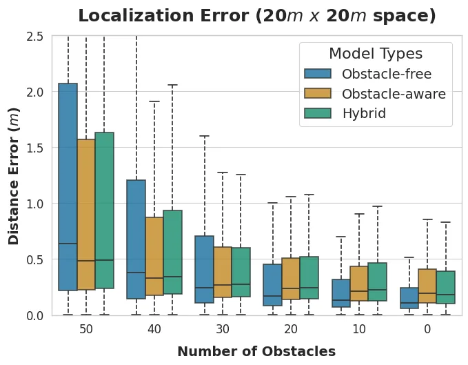
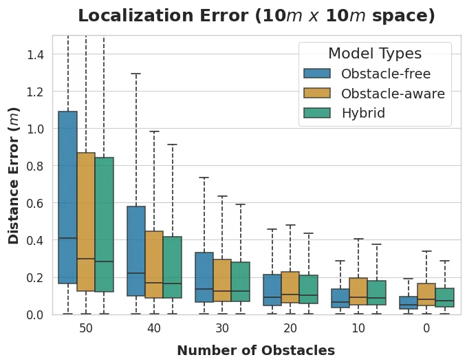
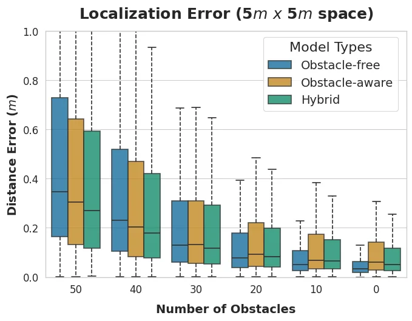
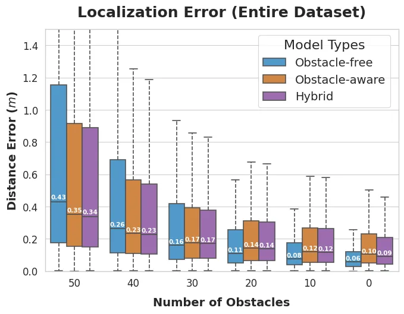
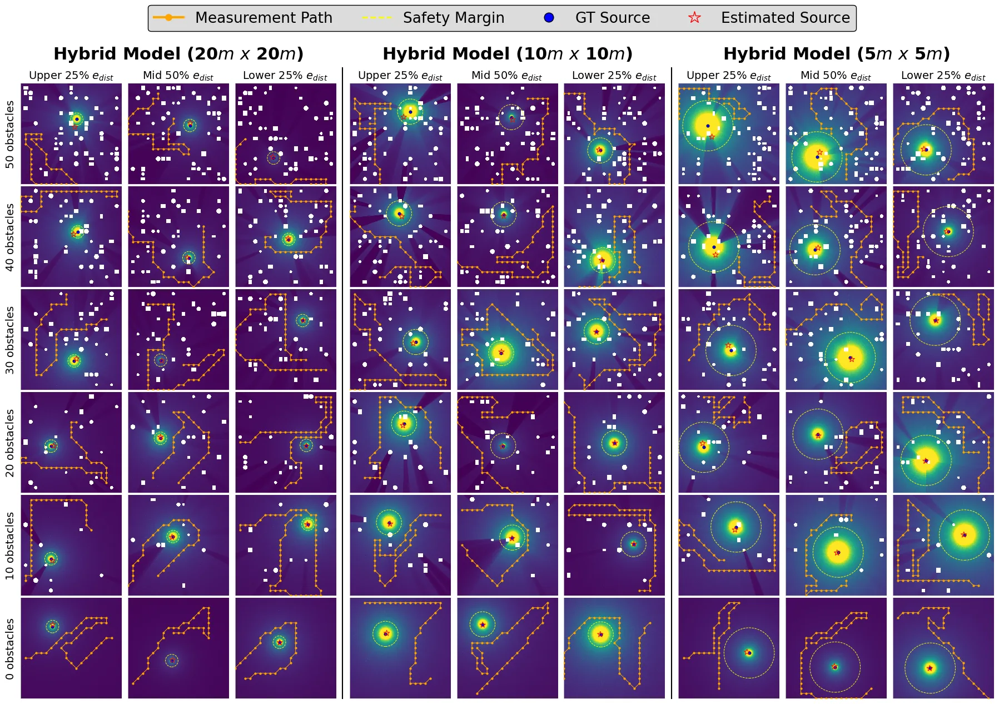

面向任意测量路径与非结构环境的物理引导机器人辐射源定位Physics-Guided Robotic Radiation Source Localization along Arbitrary Measurement Paths in Unstructured Environments
属于机器人定位/感知，但传感对象不是视觉/激光/GNSS；对未知环境中的物理约束定位和在线学习有借鉴价值。
一句话工作总结
虽是辐射感知场景，但它关注任意轨迹下的源定位和未知障碍衰减建模，可类比到稀疏传感定位问题。
摘要
机器人辐射源定位常通过规划路径靠近辐射源以提高精度，但这会增加硬件受损风险，也限制任务灵活性。该工作提出物理信息机器学习框架，在未知环境和任意测量路径下估计辐射源位置。方法设计物理启发张量来处理未知障碍造成的衰减伽马通量，并并行计算多个模型以提升鲁棒性和精度。作者在 Monte Carlo 粒子输运仿真、多种随机环境和实体实验中验证，并在真实机器人部署中使用持续学习提升在线适应性。
Using robots to estimate the location of the radiation source is an effective way to improve efficiency and safety. Existing methods focus on planning the robot's path to achieve precise estimation, typically approaching the source. However, approaching the source increases the risk of radiation damage to a robot. In addition, a path-planning algorithm designed solely for radiation source localization (RSL) limits the flexibility of missions that deploy robots into radioactive environments. This study presents an automation framework for robotic RSL that leverages a physics-informed machine learning (PIML) model to precisely estimate the source location, regardless of measurement paths, in unknown environments. Physics-inspired model tensors have been designed for PIML to handle attenuated gamma-ray flux signals from unknown obstacles, and multiple models are computed in parallel to improve the robustness and precision of the RSL. The proposed method is evaluated in high-fidelity simulation environments using Monte Carlo particle transport across diverse randomized domains, including spatial scales, radiation source types, obstacle materials and geometries, and robot trajectories. The method is also validated through physical experiments on configurations that are not included in the simulation-based evaluation. The continuous learning technique is applied in real-robot deployment to enhance the practical applicability of the online robotic RSL system. The proposed method advances robot radiation perception from pointwise flux detection to spatial intelligence.
中文解读摘录
图表/页面预览

{kind=link}

{kind=link}

{kind=link}

{kind=link}

{kind=link}
